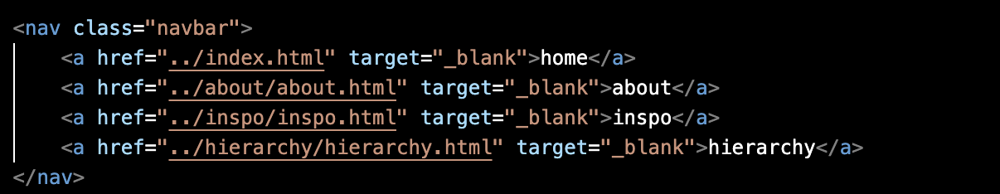

This week has been a learning process through trail and error as well as discovering new and more efficent ways of getting something done. For example, when I was finished with creating a functional navigation bar for each page I hated how boring and typical the font and color was. I had remembered declaring elements as classes from a previous course I had taken a long time ago and began revisiting those lesson subjects and managed to at least change the font size on my index page. As for the other pages I will continue to figure out how to apply those same changes to keep things consistent. I also really want to add a fun gallery where it sort of hovers! I remember doing a project with those features but again very long ago I'm excited to revisit and grow more confident through seeing my progress in this visual diary!

I'm having such a hard time attaching the CSS to every file to maintain consistency. I'm first trying to fill in my navigation bar with another color to then add padding but i'm afaid my body selector is overriding that.